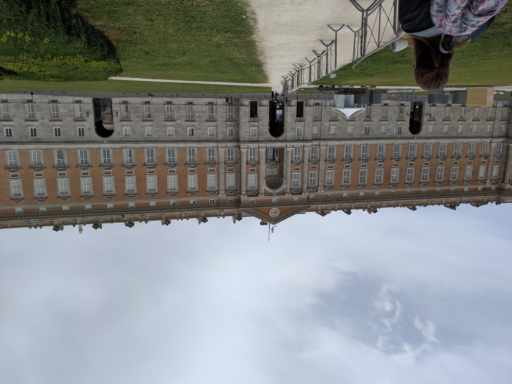
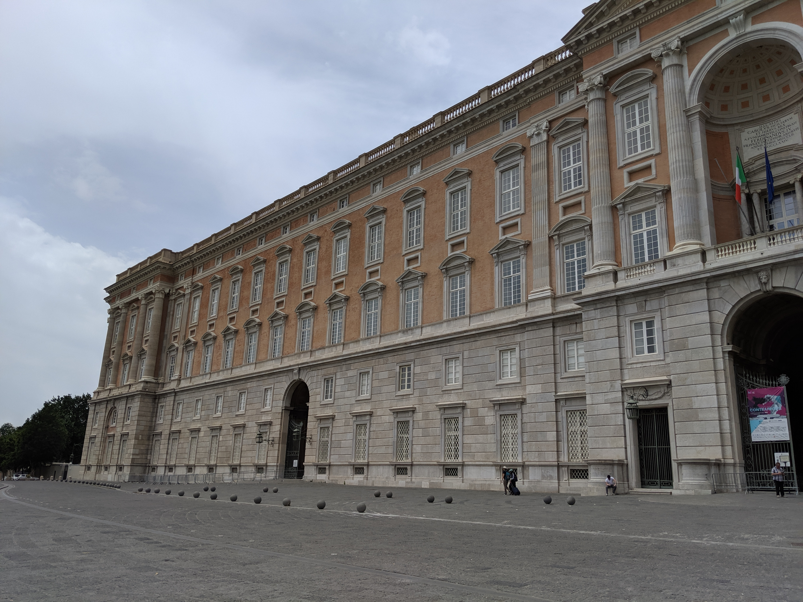
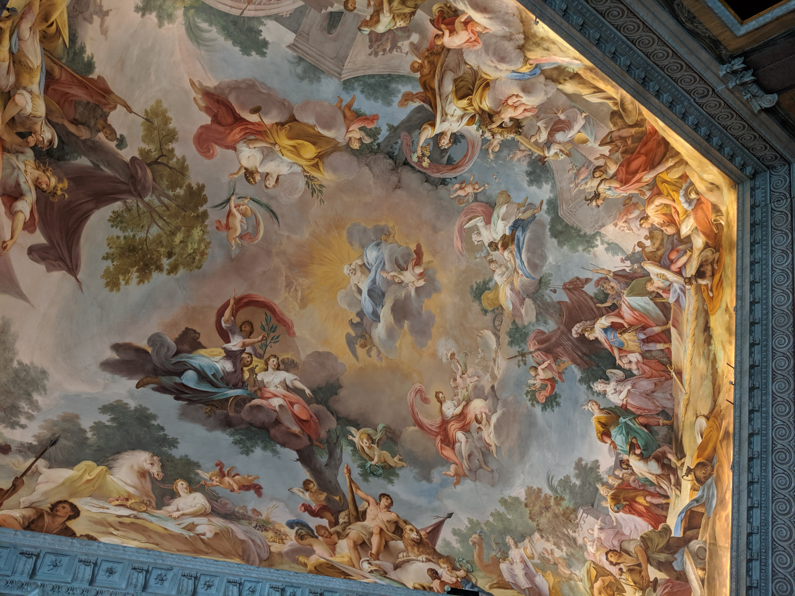

Heading to Rome from Amalfi, we made a detour to the Royal Palace of Caserta. The main reason we came here was to walk in the footsteps
of Queen Amidala from Star Wars: The Phantom Menace, but in turn we discovered so much more! The palace presents true grandeur fit for kings, which
whom it was built for. Countless rooms filled with elaborate furniture, artwork, and gold leaf covered statues. This place definitely
makes you realize how wealthy and powerful these people were...

Approaching the palace, it's truly massive!

Closer look at the facade and it's grand architecture
The main portal into the palace

Many of the frescoes in the palace are as detailed and colorful as this one
A view from the mid landing of the royal staircase, Phanom Menace was filmed here!
 The grand gardens extending for at least a mile
The grand gardens extending for at least a mile